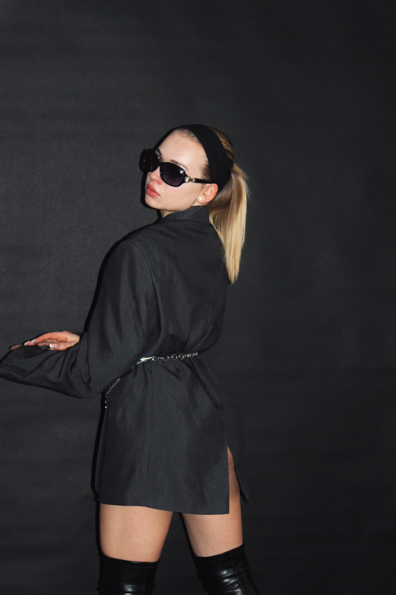

Urodziłam się 17 marca 2004 roku i od zawsze miałam pasję do mody i stylizacji. Moje jasne blond włosy i niebieskie oczy często przyciągają uwagę, a moje doświadczenie przed obiektywem sprawia, że czuję się pewnie w każdej sesji zdjęciowej. Pracowałam jako fotomodelka w Krakowskich szkołach wizażu i stylizacji w latach 2019-2024, zdobywając cenne doświadczenie i rozwijając swoje umiejętności. Miałam okazję współpracować z wieloma utalentowanymi fotografami i stylistami, uczestnicząc w sesjach grupowych oraz projektach reklamowych, takich jak kampania dla Semolino Ristorante w Warszawie. Jestem otwarta na nowe wyzwania i z niecierpliwością czekam na kolejne projekty, które pozwolą mi pokazać swoje umiejętności i pasję do mody.
